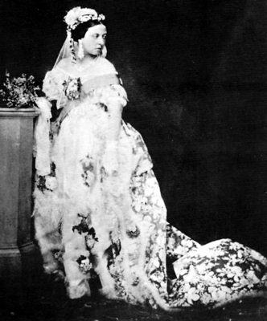
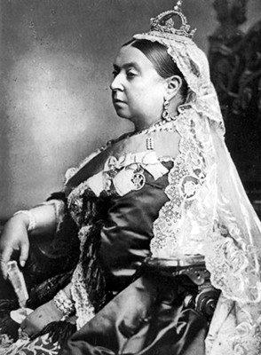
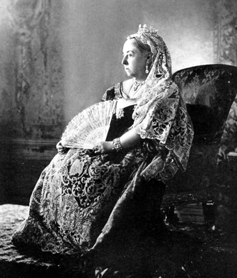

“Yenilgi ihtimalleriyle ilgilenmiyoruz.
Bizim için öyle bir şey söz konusu değil.”
Victoria
Büyük Britanya ve İrlanda’dan oluşan Birleşik Krallığı 1837– 1901 yılları arasında yöneten Kraliçe I. Victoria, İngiltere tarihinin en uzun süre tahtta kalan ismiydi. 63 yıl yedi ay yönettiği Birleşik Krallık’ta, bu dönemin Victoria Çağı (Victorian Age) olarak anılmasını sağlayacak kadar etkili bir idare ortaya koymuştu.
Tahta çıktığı dönemde Birleşik Krallık’ta anayasal monarşi düzeni çoktan kurulmuş ve Kral ile Kraliçe’nin siyasi güçleri kısıtlanmış olmasına rağmen, Victoria dönemin en önemli sembol ismi olacaktı. Victoria Çağı’nda, Sanayi Devrimi zirve noktasını yakaladı. İngiliz İmparatorluğu da tarihinin en geniş topraklarına ulaştı ve dünyanın en büyük küresel gücü haline geldi.
Victoria çocuklarını ve torunlarını Avrupa’nın soylu ailelerinden kişilerle evlendirdi. Bu şekilde Avrupa’yı birbirine bağlayarak, bazılarınca bugün artık fiili olarak kabul edilen ‘Avrupa Devleti’nin temellerini attı ve ‘Avrupa’nın büyükannesi’ lakabını aldı. Günümüzde halen birçok Avrupa monarşisi, Kraliçe Victoria’nın soyundan gelen kişiler tarafından yönetilmektedir.
Victoria 24 Mayıs 1819’da Londra’daki Kensington Sarayı’nda doğduğunda, tahtla arasında, babasının yanı sıra üç büyük kardeşi de vardı. Victoria’nın vaftiz babası Rusya İmparatoru I. Alexander, vaftiz annesiyse Kraliyet Prensesi ve Saxe-Coburg-Saalfeld Dowager Düşesi Prenses Charlotte idi. Vaftiz babasının onuruna Alexandria Victoria ismini almasına rağmen aile içinde kendisine hep Drina diye hitap ediliyordu.
Ancak isminin Alexandria olması, aile içinde sorunlara sebep olmuştu. Amcası ve gelecekte İngiltere Kralı olacak olan IV. Edward, isminin Elizabeth olmasını istemiş ve Victoria isminin o güne dek İngiltere’de kullanılmadığını öne sürmüştü. Ancak itirazları boşa çıktı: Victoria, Victoria olarak kalacaktı.

Kraliçe Victoria, düğününde beyaz gelinlik giyen ilk kadındı.
Küçük yaşta İngilizce, Almanca, İtalyanca, Yunanca ve Fransızca öğrendi. Aritmetik, tarih ve müzik dersleri alan Victoria, amcası Kral IV. Edward’ın veliaht olabilecek bir çocuğu olmadığı için, veliaht prenses olarak tahta en yakın kişi konumuna gelmişti. Victoria, 1836 yılında 17 yaşındayken ileride kocası olacak olan Saxe-Coburg ve Gotha Prensi Albert ile tanıştı. Prens Albert, Victoria’nın kuzeniydi. Albert’in babası, Victoria’nın dayısıydı. Bir kraliyet mensubu olarak evlilik teklifinin Victoria’dan gelmesi gerekiyordu ve ikili 1840’ta evlendi.
Art Arda Gelen Ölümler ve Tahta Geçiş
Victoria, 24 Mayıs 1837’de 18 yaşına basmıştı. Yaklaşık bir ay sonra bir gece annesi onu uyandırdı ve 71 yaşındaki amcası Kral IV. Edward’ın kalp krizinden öldüğünü haber verdi. Victoria, bu olayı günlüğünde şöyle anlatacaktı: “Sabah altı gibi annem beni uyandırdı. Lord Conyngham ve Canterbury Başpiskoposu’nun burada olduğunu ve beni görmek istediklerini söyledi. Yataktan çıktım ve üzerimde gecelik olduğu halde oturma odasına geçtim. Lord Conyngham, amcamın gece saat 02:15’te öldüğünü ve benim artık Kraliçe olduğumu söyledi.”
Kocası ölünce hayata küstü
Kocası Prens Albert’ın, Windsor Kalesi’ndeki kötü koşullardan dolayı yakalandığı tifodan ölmesi, Kraliçe’yi adeta yıktı ve Victoria yaşamının geri kalanını siyahlar içinde yas tutarak geçirdi. Halk önüne fazla çıkmamaya çalıştı. Böylelikle ‘Windsor Dulu’ olarak da anılmaya başlanmıştı. Hayatının geri kalanında kraliçeliğin gerektirdiği görevleri yerine getirmek haricinde, İskoçya’daki Balmoral Kalesi, Wight adasındaki Osborne Evi ve Windsor Kalesi gibi yerlerde münzevi bir hayat yaşamayı tercih edecekti.
Kraliçe, 1901 yılı Noel’ini Osborne Evi’nde geçirdi. 22 Ocak 1901’de burada beyin kanamasından yaşamını yitirdi. Cesedine beyaz bir elbise giydirildi ve gelinlik duvağı takıldı. Kocası Prens Albert’in yanına, Windsor Parkı’na defnedildi. Kraliçe ‘siyah’ cenaze törenlerini sevmediği için Londra mor ve beyaz renklerle donatılmıştı.
Öte yandan dünyaya küstüğü bu dönemde Kraliçe Victoria ile İskoçyalı uşağı John Brown arasında duygusal bir ilişki yaşandığı, hatta ikilinin gizlice evlendiği iddiaları ortaya atılmıştı. Bu dedikodular, kendisine takılan onlarca lakaba, ‘Bayan Brown’ın da eklenmesine sebep olmuştu. İddialar saray tarafından yalanlansa da, vasiyeti üzerine tabutuna iki şey koyulmuştu: Bir tarafına Albert’in geceliği, diğer tarafınaysa Brown’un resmi. Sol avucundaysa Brown’un bir tutam saçı vardı...
Adını verdiği çağda neler oldu?
Victoria dönemi İngiltere’yi tarihinin en yüksek noktasına taşıyarak dünya gücü yapan bir dizi değişim ve gelişmelere sahne oldu. Sözgelimi tahta çıktığında nüfusu 2 milyon olan Londra, öldüğünde 6.5 milyonluk bir dünya şehriydi. Ülke tarım toplumundan sanayi toplumuna geçti. Bunda tabii ki buharın bir güç olarak sanayinin hizmetine koşulması ve sanayi devriminin Victoria dönemine denk gelmesi de büyük rol oynamıştı. Makineleşmenin sanayiyi patlatması, ülkeye büyük bir zenginlik ve bunun yanı sıra sosyal ve ekonomik sorunlar da getirmemiş değildi.
İlk Victoria Dönemi olarak da isimlendirilen 1838-1848 yılları, aynı zamanda İngiltere’deki ilk demiryolunun açılışına ve parlamenter sistemin elden geçirilmesine tanıklık etti. 1832’de çıkartılan Reform Tasarısı’yla orta sınıfa mensup erkeklere oy kullanma hakkı tanındı ve böylelikle ülkedeki temsil sistemi daha adil bir tabana oturdu.
Sorunlar da yok değildi. Sanayileşmenin peşi sıra gelen sosyal ve ekonomik sorunlardan dolayı Victoria’nın ilk dönemini işsizlik, fakirlik ve ayaklanmalarla örülü ‘Sorunlar Çağı’ olarak isimlendirenler de olmuştu. Buna karşın Orta Victoria Dönemi olarak da bilinen 1848–1870 dönemi, her ne kadar sorunsuz geçmese de zenginlik, iyimserlik ve istikrar dönemi olmuştu. Özellikle bu dönemde insana, ekonomiye ve teknolojiye yapılan yatırım, İngiliz İmparatorluğu’nu yaratacaktı.

64 yıl boyunca tahtta kaldı.
Bu dönemde imparatorluğun genişlemesi ahlaki bir sorumluluk olarak görüldüğü için, misyonerlik faaliyetleri had safhaya çıkmıştı. Bununla birlikte aynı dönemde, dinin nasıl anlaşılması gerektiğine yönelik tartışmalar da almış yürümüştü. İngiliz Kilisesi, dini ritüellerin doğası hakkında çatışan görüşlere sahip üç farklı kola bölünmüş; felsefi alandan dine yönelik mantıkçı saldırılar başgöstermiş; dönemin biyoloji ve jeoloji paradigmaları dini inançları, insanın yaradılışıyla ilgili yerleşik inançları ve İncil’i çürütmeye kalkışmıştı.
Victoria Çağı’nın son dönemi olan 1870–1901 ise, imparatorluk olmanın faturasının çıkarıldığı bir zaman dilimiydi. Bu dönemde İngiltere, askeri ve ekonomik üstünlüğü ile ilişkili tehditlerle karşı karşıya kalmıştı. Karl Marx ve Friedrich Engels gibi düşünürlerin devrimci teorilerinden beslenen birçok sosyalist akım ivme kazanmıştı. Yine bu dönemde edebiyatta melankoli ve estetikçilik zirveye çıkmış, modernist yaklaşımlar da filizlenmeye başlamıştı.
Kadın hakları gelişti ama...
Victoria’nın uzun süreli hükümdarlığı, aynı zamanda ülkedeki kadınların yaşam şartlarındaki gelişmelere de tanıklık edecekti. Kadınlarla erkekler arasındaki dengesizlikler, ‘Kadın Sorunu’ (The Woman Question) başlığı altında toplanan tartışmaları besledi ve kadınlar kademeli olarak önemli haklar kazandı. Her ne kadar başlangıçta seçme ve seçilme hakkından mahrum olsalar da, zamanla küçük çocuklarının velayetlerini alma, evlilikte edinilen malları üzerlerine alma gibi haklar edindiler, dönemin sonlarına doğru da yüksek tahsil yapabilme şansına kavuştular.
Victoria Çağı, sadece parıltılarla anılması gereken bir zaman dilimi olmadı tabii ki. Sanayileşmenin sonucu olarak kadınların büyük oranlarda iş gücüne katılması, ağır ve ucuza çalışma şartları ve bunun getirdiği sıkıntılar ülkede kadın istismarını patlama noktasına getirmişti.
Yine bu dönemde okur yazarlık oranı süratle artmış, edebi eserler, sanayinin de gelişmesiyle daha ucuza mal edilmeye başlanmıştı. Süreli yayınlardaki patlama, romanların popülerleşmesi, şiirdeki gelişmeler de yine bu döneme has özelliklerdi. Dönem boyunca popüler olan tiyatro, George Bernard Shaw ve Oscar Wilde gibi güçlü isimlerin, daha çok Victoria iktidarının yalanlarını ve ikiyüzlü politikalarını hicveden komik eserleriyle zirve noktasına ulaşmıştı.
Üzerinde Güneş Batmayan İmparatorluk
İngiltere, Victoria döneminde sadece bir ada toplumu olarak kalmamıştı haliyle. Daha çok küresel bir imparatorluğun merkezi olarak, birçok kültürle etkileşimin odak noktası olma görevi görmüştü. Her ne kadar bu etkileşim genellikle tek taraflı olsa da!
On dokuzuncu yüzyılın sonlarında, neredeyse yerkürenin dörtte biri İngiliz İmparatorluğu’nun bir parçasıydı ve Londra’daki yönetim, 400 milyon kişiye hükmediyordu!
1901’e gelindiğinde İngiltere’nin doğrudan ya da dolaylı sömürgelerini şu şekilde sıralamak mümkündü: Avustralya, İngiliz Guyanası (günümüzde Guyana), Brunei, Kanada, Kıbrıs, Mısır, Gambia, Gana, Hong Kong, İngiliz Hindi (günümüz Bangladeş, Hindistan, Myanmar, Pakistan ve Sri Lanka’sı), İrlanda, Kenya, Malawi, Malezya, Malta, Mauritius, Yeni Zelanda, Nijerya, Sierra Leone, Singapur, Somali, Güney Afrika, Sudan, Rodezya (Zimbabwe) ve Trinidad Tobago!
Kraliçe Victoria’nın ‘üzerinde güneş batmayan imparatorluğu’ geniş sınırlara yayılmıştı ve bünyesinde farklı yönetim şekilleri hüküm sürüyordu. Sözgelimi doğrudan Londra’dan yönetilen Jamaika gibi kolonilerin yanı sıra, kısmen İngiltere’ye bağlı olan Uganda gibi sömürgeler de vardı. Hindistan 1857’den sonra doğrudan Londra’dan yönetilmeye başlanmış ve 1877’de Victoria, Hindistan İmparatoriçesi unvanını taşımaya başlamıştı. Kanada ve Avustralya gibi, Avrupalı nüfus barındıran kolonilerse, kademeli olarak kendi kendilerini yöneten hükümetlere kavuşmuş ve yüzyılın sonlarına doğru İngiliz İmparatorluğu projesinin eşit ortakları olarak kabul edilmeye başlanmışlardı. İlginçtir (ve aynı zamanda acıklıdır da) yerli nüfusu baskın olan Sierra Leone ve Trinidad Tobago gibi koloniler bağımsızlıklarını 20. yüzyıla kadar kazanamayacaktı. Victoria dönemi aynı zamanda emperyalizm ve sömürgecilikle ilgili tartışmaların da başladığı bir zaman dilimiydi.
Yeni Emperyalizm tartışmaları başlıyor
İngilizlerin ünlü devlet adamı Joseph Chamberlain’ın ‘The True Conception of Empire’ (İmparatorluğun Gerçek Algılanışı) isimli eserinde belirttiği gibi, İngiltere’nin Amerika kıtasındaki kolonilerini kaybetmiş olması, İngilizlerin imparatorluk inşa iştahını kesmişti. Buna karşın bir süre sonra proje, Hindistan alt kıtasını da imparatorluk sınırları içine alacak şekilde gelişmeye devam etti. Özellikle 1870-1900 arasındaki hızlı gelişim, imparatorluk inşa sürecine yeni bir yaklaşım tarzı doğurmuş ve böylelikle ‘Yeni Emperyalizm’ (New Imperialism) olarak bilinen ve Birinci Dünya Savaşı’na kadar devam edecek olan bir süreç çıkmıştı ortaya.
Bu zaman diliminde İngiltere, Avrupalı rakiplerine karşı, özellikle Afrika’da olmak üzere, yeni topraklar edinmek için sıkı bir rekabete girişti. Yeni Emperyalizm döneminde, fiziki sömürgelerden ziyade, özellikle ekonomik olarak göbekten İngiltere’ye bağlı sanal sömürgeler ağırlık kazanacaktı. Yine bu dönem, klasik sömürgecilikle yeni emperyalizm arasındaki farklara yönelik sert ideolojik tartışmalara da beşiklik etti. Aralarında İngilizlerin de bulunduğu entelektüellerin sömürgecilik ve emperyalizme dönük ağır eleştirileri, ‘beyaz adamın üstünlüğü’ iddialarının da ortaya çıkmasına neden olacaktı. Özellikle Victoria döneminin önde gelen isimleri, imparatorluğun sınırlarını genişletmesine medenileştirici bir kılıf bularak, yapılanları ahlaki ve ırki üstünlükle açıklama ve savunma yolunu seçmişti.
Victoria Çağı’nın bilim adamları da bu yöndeki iddialara bilimsel kılıf giydirme misyonunu üstlenmişti. Onlara göre Avrupalı olmayanlar, biyolojik ve kültürel açıdan yeteri kadar gelişmemişlerdi ve bundan dolayı kendilerini idare etme ve topraklarını geliştirme hususunda yardıma ihtiyaçları vardı! Öyle ki,
W. Winwood Reade ve Richard Marsh gibi, dönemin önemli yazarları, sömürgelerde yaşayan bu ‘yarı gelişmiş insancıkları’, ‘korkulması gereken yamyamlar’, ‘canavarlar’ ya da ‘insan benzeri’ varlıklar olarak niteleyecek kadar ileri gitmişlerdi. Tüm bu sömürgeleştirme süreci ve onu haklı çıkarmaya yönelik girişimler, ünlü yazar Rudyard Kipling’in ‘The White Man’s Burden’ (Beyaz Adamın Yükü) başlıklı şiiriyle ete kemiğe bürünmüş, sömürgeleştirmenin medeniyet götürmekle eşdeğer ve diğerlerini ‘adam etmenin’, beyaz Batılıların sırtındaki ahlaki bir yük olduğuna inanılmaya başlanmıştı.

Uzun süren iktidarı boyunca monarşinin meşruti boyut kazanması
yönünde ciddi adımlar atıldı.
Son anına dek imparatorluğu için çalıştı
Toparlamak gerekirse, Victoria’nın uzun soluklu yönetiminde iktidar, kademe kademe seçkinlerden seçilmişlere aktarıldı. Birbiri ardına yapılan, 1867 tarihli ‘İkinci Reform Düzenlemesi’ (Second Reform Act), 1872’de hayata geçirilen gizli oy uygulaması ve 1884’te yürürlüğe giren yılda 10 pounddan fazla geliri ya da mal varlığı olanlara oy kullanma zorunluluğu getiren ‘Temsil Düzenlemesi’ (Representation of the Peoples Act) gibi kanuni düzenlemeler, seçme ve seçilmeye dayanan sistemin ekonomik ve sosyal temellerini attı. Sonuç olarak siyasi partilerin de üzerinde olan anayasal monarşi fikri, yine Victoria döneminin ürünüydü. (Buna karşın Victoria, olan biteni uzaktan seyretmedi ve yeri geldiğinde kendi görüşlerini zorla da olsa siyasilere dikte ettirmekten geri durmadı!)
İkinci Reform Düzenlemesi’nin ardından ortaya çıkan iki partili (Liberal ve Muhafazakâr) sistem, kraliçenin manevra alanını azalttı ve böylece başbakanın seçilmesindeki sınırsız müdahale özgürlüğüne set çekildi. Bununla birlikte, kendisi de imparatorluk fikrinin büyük savunucusu olan kraliçe, iktidarı boyunca, kendi frekansında olan Benjamin Disraeli gibi başbakanlarla çalışmaktan zevk aldı.
İlerlemiş yaşına rağmen son ana kadar görevinin gereklerini yerine getirmeye çalıştı, resmi ziyaretlerden geri durmadı. Güney Afrika’daki Boer Savaşı (Güney Afrika’ya hâkim olmak için Hollandalı kolonicilerle yapıldı) iktidarının son yıllarında ağzının tadını kaçırsa da kraliçe, yarım asır önce gerçekleşen Kırım Savaşı’nda olduğu gibi, burada da cepheyi ve askeri hastaneleri ziyaret etti ve tarihe geçen şu sözleri sarf etti: “Yenilgi ihtimalleriyle ilgilenmiyoruz. Bizim için öyle bir şey söz konusu değil.”
NOTLAR